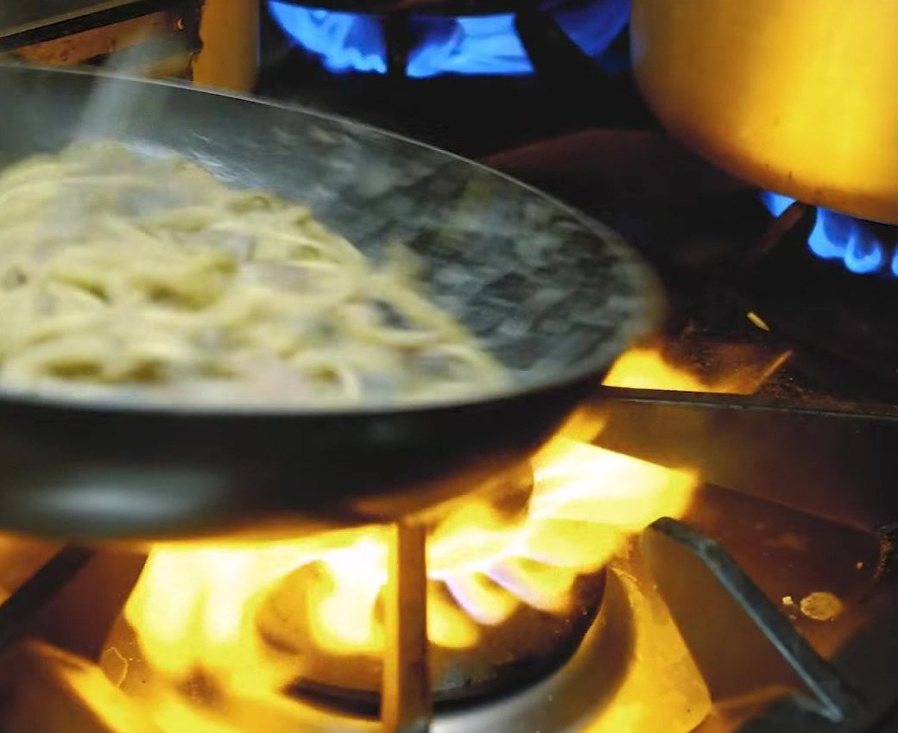
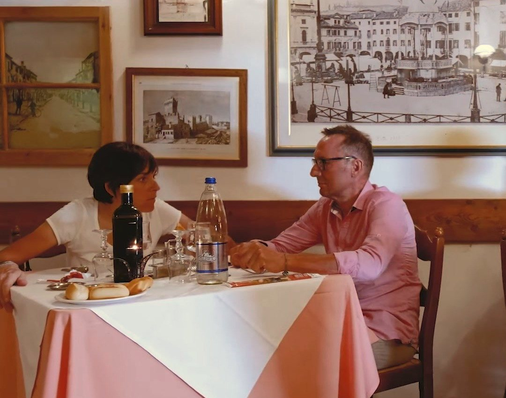
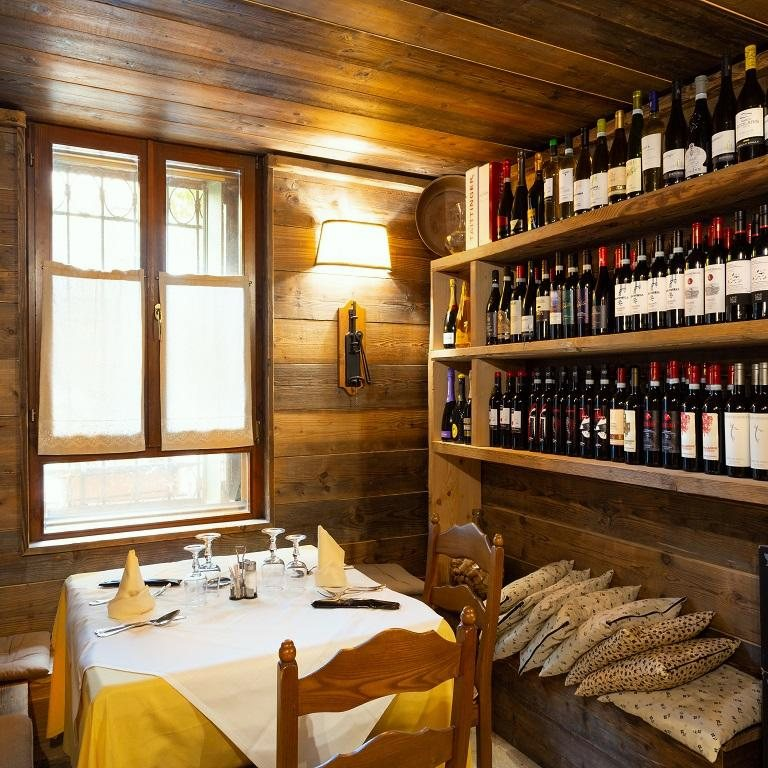

Senza
rivisitazioni
Cucina veneta preparata come vuole la tradizione: musso con polenta, baccalà alla vicentina, bigoli alla boscaiola, fegato alla veneziana. I vini vengono da cantine dei Colli Euganei.
Cucina veneta preparata come vuole la tradizione: musso con polenta, baccalà alla vicentina, bigoli alla boscaiola, fegato alla veneziana. I vini vengono da cantine dei Colli Euganei.

Il venerdì sera c’è il menù di pesce, in omaggio alla cultura contadina di queste terre: è gradita la prenotazione.

Insalata di mare
Carpaccio di pesce spada
Scampi alla busara
Granseola o granzoporro
Gamberetti in salsa rosa o con rucola e grana
Sarde in saor
Cozze e vongole
Astice
Spaghetti allo scoglio
Pasticcio di pesce
Spaghetti alla marinara
Tagliatelle alla busara
Tagliatelle con le seppie
Gnocchi alla marinara
Risotti di pesce
Penne al salmone
Zuppa di pesce
Vitello di mare ai ferri
Sogliola ai ferri
Branzino ai ferri
Orata ai ferri
Scampi e capesante
Seppie ai ferri
Spiedini di gamberoni
Fritto misto
Baccalà alla vicentina o in insalata
Seppie alla veneta
Grigliata mista
La domenica il ristorante è chiuso. Il venerdì sera, per il pesce, è meglio prenotare.

Albergo Ristorante Leon d’Oro S.n.c. di Rubini Rodolfo & C.
Viale Fiume 20, 35042 Este (PD)
Ristorante chiuso la domenica
Telefono 0429 602949
Fax 0429 3072
prenotazioni@leondoroeste.it
P.IVA e C.F. 04185510288
REA PD-369167
CIN IT028037A1GWJ7NDDS